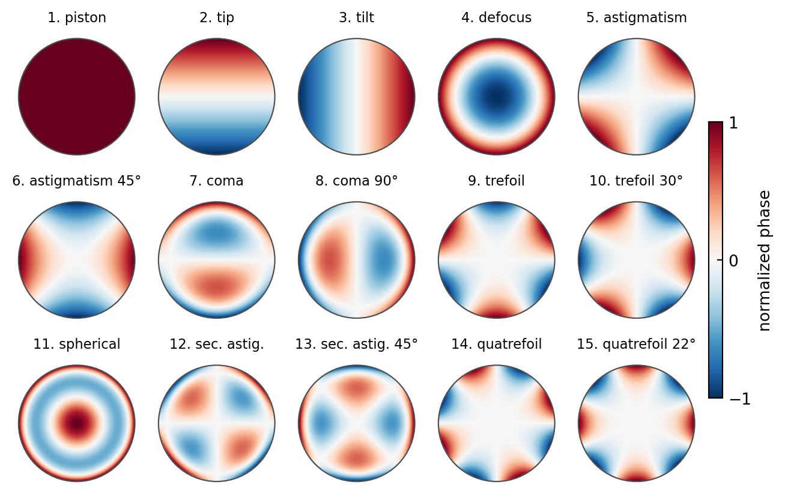

Code
fig, axes = plt.subplots(3, 5, figsize=get_size(15, 9))
axes = axes.flatten()
# Noll indexing: map linear index to (n, m)
noll_modes = [
(0, 0), # 1: piston
(1, -1), # 2: tip
(1, 1), # 3: tilt
(2, 0), # 4: defocus
(2, -2), # 5: astigmatism
(2, 2), # 6: astigmatism
(3, -1), # 7: coma
(3, 1), # 8: coma
(3, -3), # 9: trefoil
(3, 3), # 10: trefoil
(4, 0), # 11: spherical
(4, -2), # 12: secondary astigmatism
(4, 2), # 13: secondary astigmatism
(4, -4), # 14: quatrefoil
(4, 4), # 15: quatrefoil
]
names = ['Piston', 'Tip', 'Tilt', 'Defocus', 'Astig. x', 'Astig. y',
'Coma x', 'Coma y', 'Trefoil x', 'Trefoil y', 'Sph. Aber.',
'Sec. Astig. x', 'Sec. Astig. y', 'Quatrefoil x', 'Quatrefoil y']
# Radial Zernike polynomials (standard definition)
def zernike_radial(n, m, rho):
"""Radial part of Zernike polynomial"""
if (n - m) % 2 != 0:
return np.zeros_like(rho)
result = np.zeros_like(rho, dtype=float)
for k in range((n - m) // 2 + 1):
coeff = ((-1)**k * math.factorial(n - k) /
(math.factorial(k) * math.factorial((n + m) // 2 - k) *
math.factorial((n - m) // 2 - k)))
result += coeff * rho**(n - 2*k)
return result
def zernike_mode(n, m, rho, theta):
"""Full Zernike polynomial Z_n^m"""
rad = zernike_radial(n, abs(m), rho)
if m < 0:
return rad * np.sin(abs(m) * theta)
elif m > 0:
return rad * np.cos(m * theta)
else:
return rad
# Generate grid
rho_grid = np.linspace(0, 1, 200)
theta_grid = np.linspace(0, 2*np.pi, 200)
Rho, Theta = np.meshgrid(rho_grid, theta_grid)
for idx, ((n, m), name) in enumerate(zip(noll_modes, names)):
ax = axes[idx]
# Compute Zernike mode
Z = zernike_mode(n, m, Rho, Theta)
# Mask outside unit circle
mask = Rho <= 1
Z[~mask] = 0
# Plot
im = ax.contourf(Theta, Rho, Z, levels=20, cmap='RdBu_r', vmin=-1, vmax=1)
circle = plt.Circle((np.pi, 0), 1, fill=False, edgecolor='black', linewidth=1)
ax.add_patch(circle)
ax.set_xlim(0, 2*np.pi)
ax.set_ylim(0, 1.1)
ax.set_aspect('equal')
ax.set_title(f'{idx+1}: {name}', fontsize=9)
ax.set_xticks([])
ax.set_yticks([])
plt.tight_layout()
plt.savefig('img/zernike_modes.png', dpi=150, bbox_inches='tight')
plt.show()
print("✓ Zernike polynomial modes visualized")
✓ Zernike polynomial modes visualized